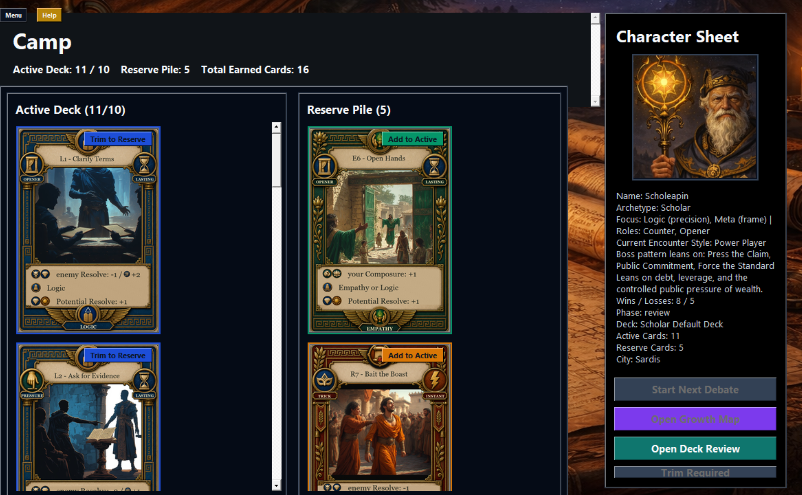
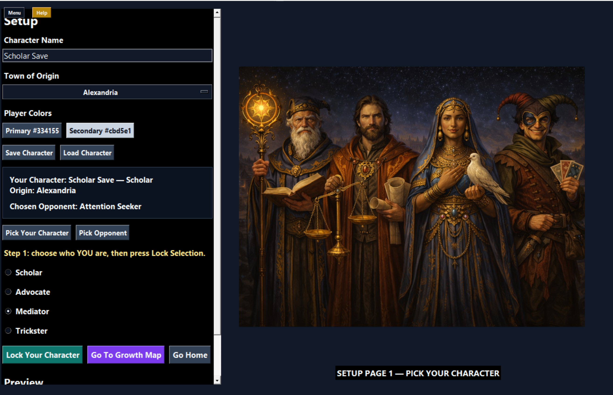
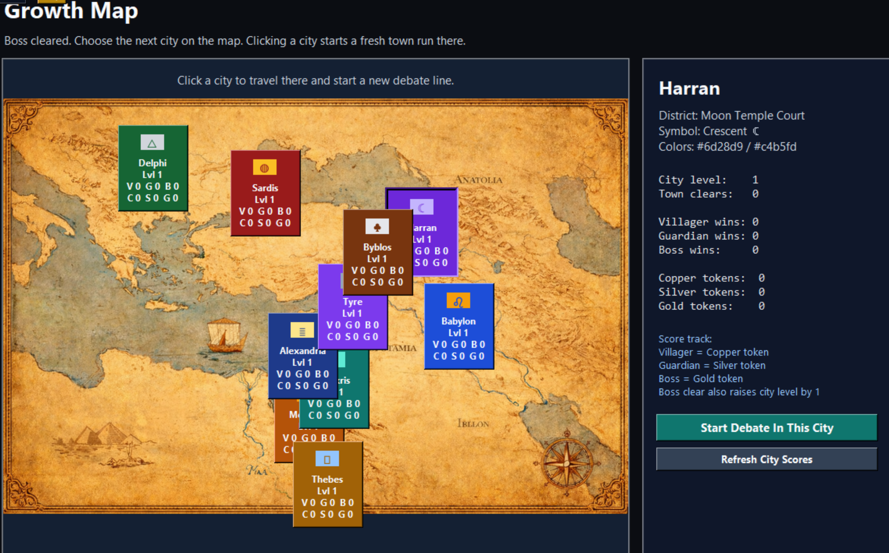
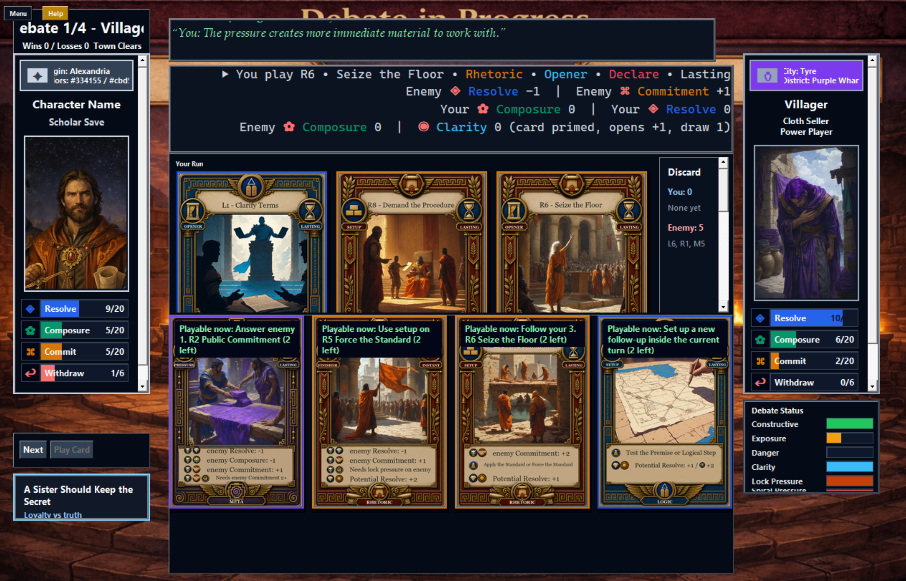
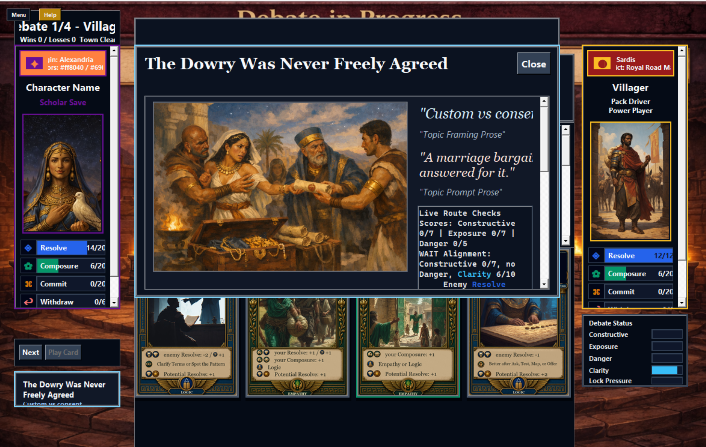
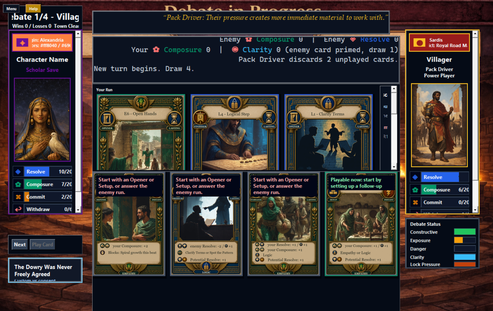
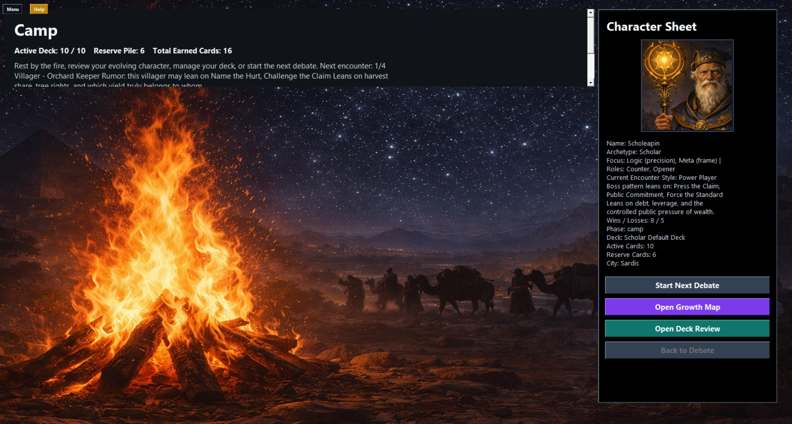

Map, Camp, Deck
Move through the game route, use camp and deck screens, and prepare the cards you want before the next encounter.
Every city is a locked door, and every argument is a key.
In SphinxLite, every city is a locked door, and every argument is a key. Will you take the Logic road, building Clarity step by step until the truth has nowhere to hide? Will you press for a Pressure Win, breaking Resolve before your opponent can recover? Or will you expose the fault beneath their claim and turn the whole debate against them? It is not enough to speak loudly. You have to read Commitment, protect your Composure, watch the danger rise, and know when a villager is about to walk away. Win the room, shape the topic, and follow the thread from market quarrels to guarded halls. In Sphinx, the debate is always in progress.
Move through the game route, use camp and deck screens, and prepare the cards you want before the next encounter.
Cards use roles, needs, setup rules, and chain rules. Left-click previews a card and right-click opens a full-card zoom.
Player and enemy use the same core play rules. Outcomes explain whether the debate ends by Alignment, Exposure, Withdrawal, Pressure Win, Escalation, or Stalemate.

A fresh line starts with an Opener or Setup unless a card can answer the enemy run. After that, the next card must legally chain, answer the enemy, start a new angle, use active setup, or satisfy a Needs rule.
Lasting cards stay on the run board. Instant cards resolve and go to discard, but still count for same-turn sequence memory.

Launch into the current Windows build.

Follow the route into encounters.

Play cards against the encounter using shared rules.

Track the visible line of argument as cards remain in play.

Inspect full card art and rule text before playing.

See why the debate ended and what route mattered.